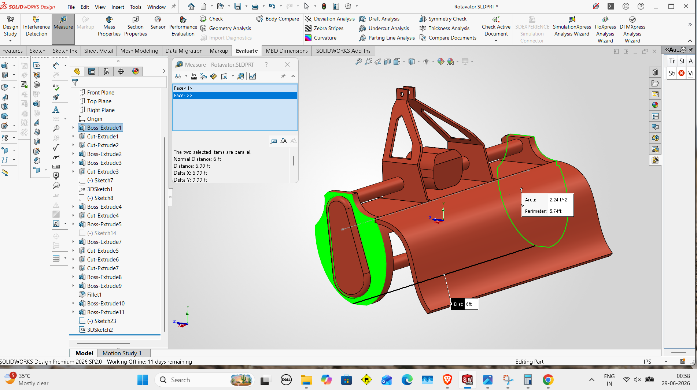
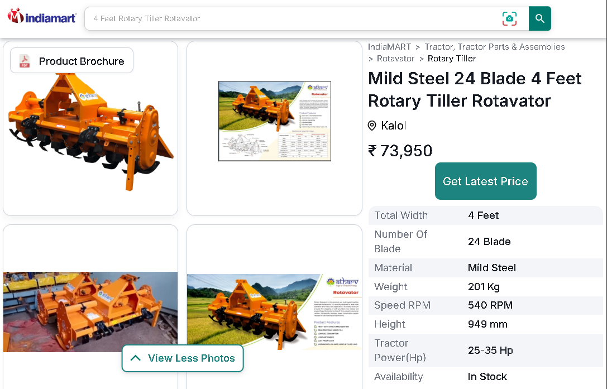
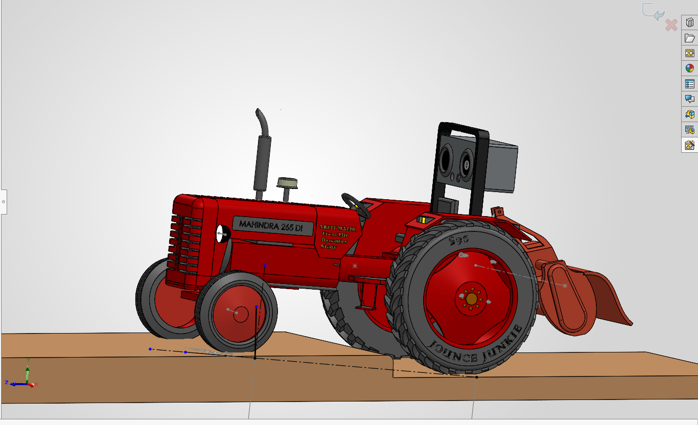
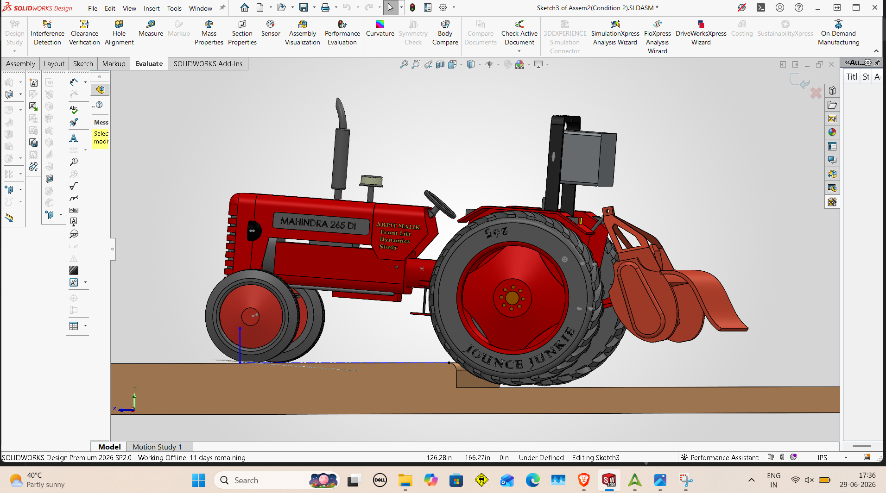
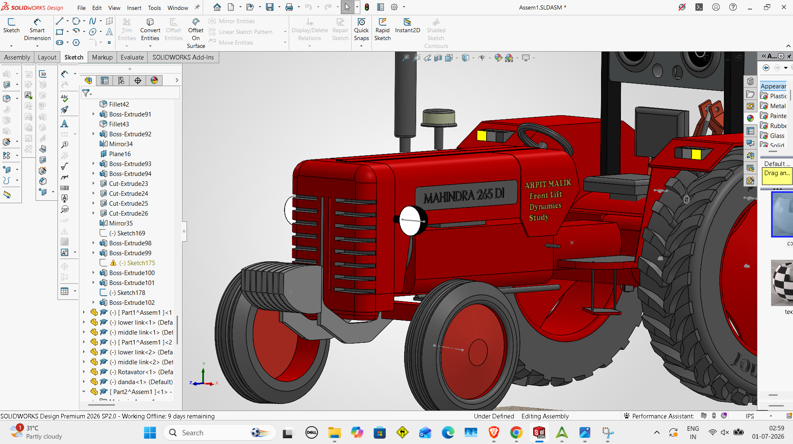
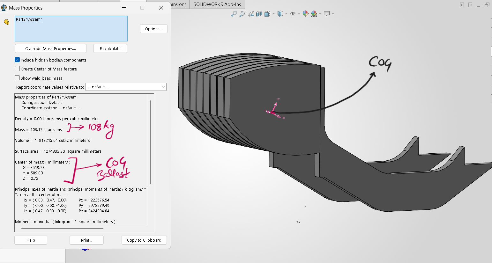
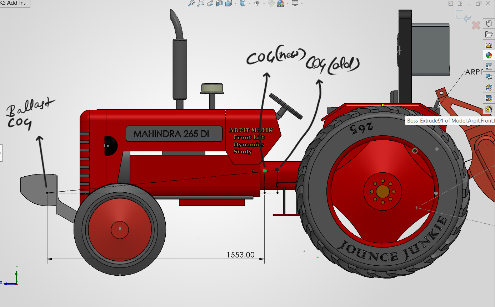
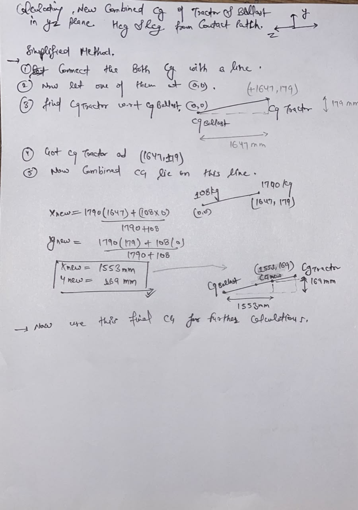
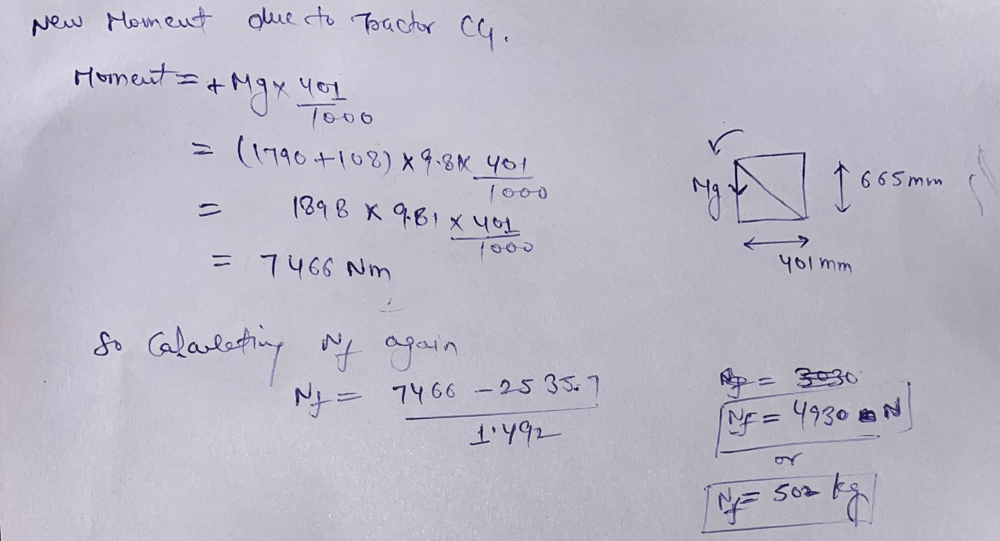

A simplified static model of rear-implement tractor behaviour during irrigation bund crossing
Problem Statement
A rear-mounted implement tractor moves normally across a paddy field under working load.
But the moment its rear tyres climb over the irrigation bund at the field boundary,
the front of the tractor becomes visibly light — sometimes lifting entirely off the ground.
The implement weight does not change. The tractor weight does not change.
Yet the front axle reaction drops sharply at that instant.
This study asks a simple question: what changes at that exact moment?
Using moment equilibrium on a simplified static model, it investigates how a shift
in the rear tyre contact point — from field level to bund-top — alters the load
distribution across the tractor's axles.
Field Note
Not a one-off — seen across tractors. Study model uses a third, the Mahindra 265 DI.
Fig 1
Tractor replica — reverse engineered from Mahindra 265
Geometry for this replica (wheelbase, KPI, camber, scrub radius) comes from a separate
reverse-engineering study using measured field data.
View study on LinkedIn ↗
Tractor
Model referenceMahindra 265 DI
Wheelbase (replica)1880 mm
CG — longitudinal40% of WB from rear axle (assumed)
CG height750 mm (assumed)
In a 4×2 tractor, the gearbox and differential sit rearward, rear tyres are larger and heavier,
and the engine is not fully forward — making the rear end heavier than the front.
CG is therefore assumed closer to the rear axle.

Fig 2
Rotavator — CAD model
Rotavator (Implement)
Weight201 kg (Indiamart)
Width4 ft (30 HP class)
CGGeometric centre (assumed)

Spec sheet — 4 ft rotavator, 201 kg, rated for 30 HP tractors (Indiamart).
Deviation of 50 mm accepted for this simplified static study.
Step 2 — Loading Scenarios
Case 1 — Tyres on Split Surface
Front tyres rest on the higher field surface while the rear tyres remain
inside the paddy field.

Fig 5
Case 1 — front tyres elevated, rear tyres in field
Determine
Support reactions
Front axle load
Moment Equilibrium — About Contact Patch
Fig 6
Moment solving about the contact patch — tractor CG, implement CG, front axle reaction (Nf)
Fig 7Calculation — Nf (page 1 of 2)
Fig 8Calculation — Nf (page 2 of 2)
Step 2 — Loading Scenarios
Case 2 — Rear Tyres on Split Surface
Rear tyres rest on the higher field surface while the front tyres remain
inside the paddy field.

Fig 9
Case 2 — rear tyres elevated, front tyres in field
Determine
Support reactions
Front axle load
Moment Equilibrium — About Contact Patch
Fig 10
Moment solving about the contact patch — tractor CG, implement CG, front axle reaction (Nf)
Fig 11Calculation — Nf
Comparison
Case 1 vs Case 2 — Front Axle Load
Shifting the rear support point from field level (Case 1) to the bund-top
(Case 2) moves the rear contact point forward, reducing the restoring moment
and sharply cutting the front axle reaction.
Fig 12
Front axle load comparison — Case 1 vs Case 2
Parameter
Case 1
Case 2
Rear tyre position
Field level
Irrigation bund
Rear support point
Original
Shifted 421 mm forward
Front axle load
5807 N (592 kg)
1937 N (197 kg)
Change in front axle load
—
↓ 66.6%
Remedy
Adding Front Ballast to the Tractor
Adding front ballast shifts the combined center of gravity forward, increasing the restoring
moment about the rear support point. This increases the front axle load, improving steering
stability and reducing the tendency of the tractor's front end to lift.
Front Ballast in the Field
Front ballast is added weight — usually cast iron blocks — bolted onto the front axle
carrier ahead of the front wheels, as you can see in the GIF below. It counteracts the
weight transfer caused by a heavy rear-mounted implement, keeping enough load on the
front axle for steering control and stability.
Ref 1John Deere — front ballast with plough
Ref 2Massey Ferguson — front ballast with Super Seeder
Verification Workflow
01
Create the front ballast CAD model along with the axle-mounted support bracket — on the Mahindra 265, front weights are supported by the front axle carrier rather than the chassis — and assign the actual material to obtain a realistic ballast mass.

Fig 13
Assembled front ballast with axle-mounted support bracket
02
Obtain the ballast CG from CAD.

Fig 14
Ballast CG obtained via mass properties in CAD
03
Calculate the combined CG of the tractor and front ballast.

Fig 15
CG shift illustrated on tractor CAD — before and after front ballast

Fig 16
Combined CG hand calculation — tractor + front ballast
04
Recalculate the front axle reaction for Case 2 using the new combined CG.

Fig 17
Front axle reaction (Nf) — Case 2 with front ballast
05
Compare results with and without ballast.
Results — Case 2
Configuration
Front Axle Load
Without ballast
197 kg
With 108 kg ballast
502 kg
Engineering Interpretation
Front ballast mass — 108 kg
Front axle load increased from 197 kg to 502 kg
Increase of 305 kg (≈ 155%)
Adding a 108 kg front ballast increased the front axle load
from 197 kg to 502 kg, demonstrating how front ballast
restores steering axle load by shifting the combined center of gravity forward and
increasing the restoring moment.
Design Trade-off
Front ballast improves front axle load and stability, but excessive ballast increases
steering effort, front tyre wear, and front axle loading. Therefore, ballast should be
optimized for the intended implement and operating conditions.


 Deviation of 50 mm accepted for this simplified static study.
Deviation of 50 mm accepted for this simplified static study.